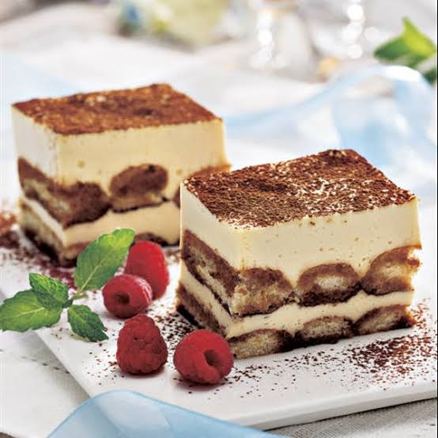
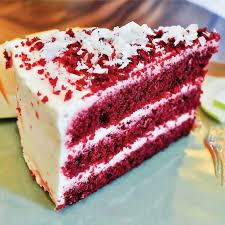
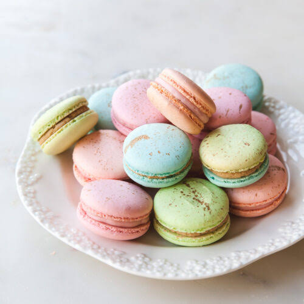
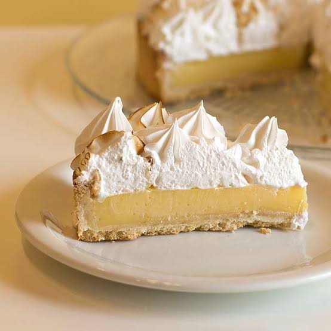
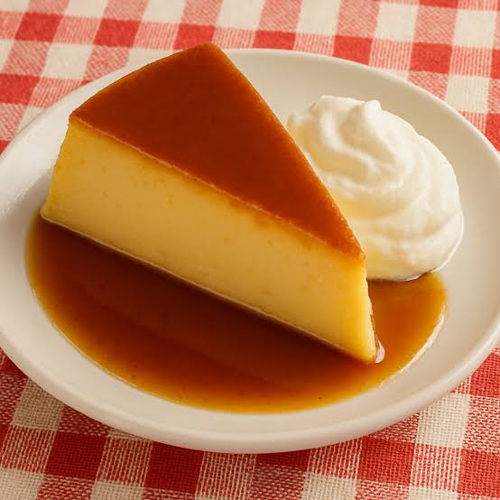
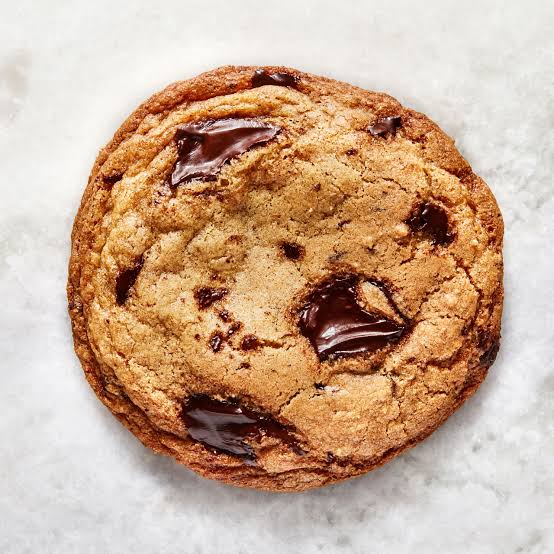
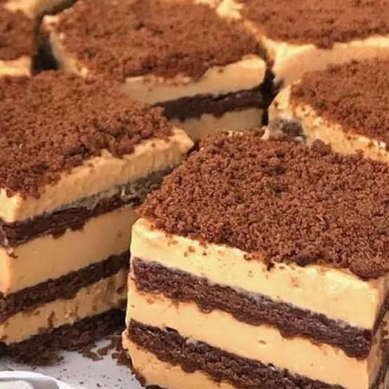
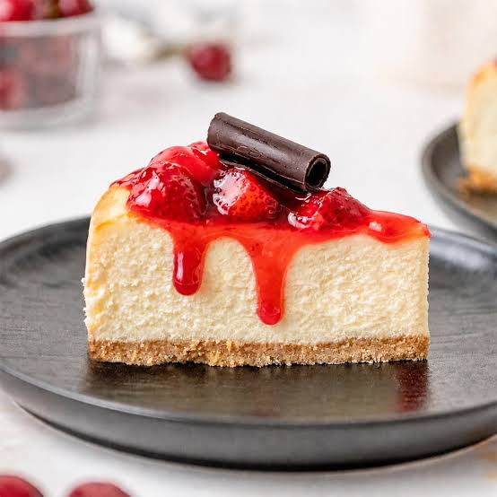
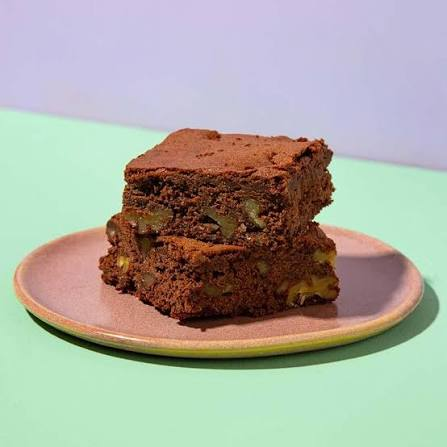
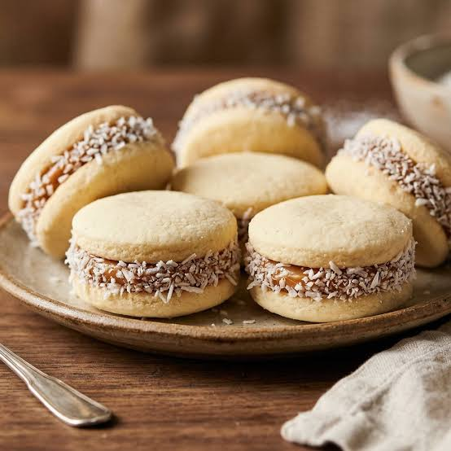

Tiramisú
Hecho con capas de vainillas empapadas en café y crema (hecha con queso mascarpone, yemas de huevo y azúcar), con una fina capa de café espolvoreado por encima.

Hecho con capas de vainillas empapadas en café y crema (hecha con queso mascarpone, yemas de huevo y azúcar), con una fina capa de café espolvoreado por encima.

Consiste en un bizcochuelo de capas color rojo intenso, con una textura húmeda y aterciopelada, y una cobertura o relleno cremoso.

Hechos con dos galletas crujientes por fuera y suaves por dentro, rellenas con una ganache de sabores varios.

Hechos con una base de masa quebradiza, rellenos de crema de limón y cubiertos por merengue italiano.

Hecho de huevos, leche, azúcar y esencia de vainilla, cubierto de caramelo.

Galletas con chips de chocolate.

Hecha con capas de chocolinas remojadas en chocolatada y mezcla de dulce de leche y queso crema, con una capa de chocolinas molidas espolvoreadas por encima.

Hecho con una base de galletas molidas, relleno de una mezcla de queso crema, azúcar y huevo, y cubierto de dulce de frutilla.

Bizcochuelo de chocolate compacto, con una costra exterior crujiente, relleno de nueces.

Hechos con dos galletas suaves, rellenas de dulce de leche, con coco rallado pegado en el dulce.
